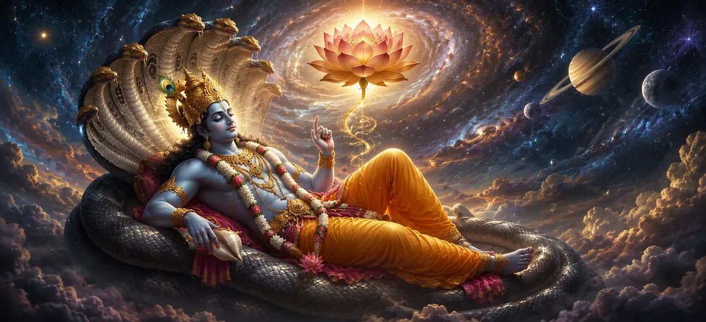

With the birth of Lord Brahma, the work of creation was ready to begin, yet the cosmic order was still incomplete. The countless worlds that would soon emerge required not only a creator but also a divine protector who could preserve harmony, uphold righteousness, and sustain all living beings throughout the endless cycles of time. Without such a preserving power, creation itself could neither flourish nor endure. Understanding this eternal truth, Lord Shiva revealed the next stage of His divine plan. Through His infinite will and the boundless power of Adi Shakti, another supreme manifestation was prepared—Lord Vishnu, the eternal preserver of the universe. His appearance was not separate from Shiva's divine purpose but formed an essential part of the cosmic balance through which creation, preservation, and dissolution would remain perfectly united. This sacred chapter narrates the divine creation of Lord Vishnu, revealing His eternal role as the protector of the worlds, the guardian of Dharma, and the refuge of all devotees. It explains how the Supreme Lord established the perfect harmony of the universe by appointing Vishnu as its divine sustainer, ensuring that all creation would remain protected according to the eternal law of the cosmos.
After Lord Brahma accepted the sacred responsibility of creation, another profound question arose within the divine order. Once countless worlds, living beings, and celestial realms came into existence, who would protect them? Who would preserve righteousness, maintain harmony, and ensure that creation continued according to the eternal laws established by the Supreme Lord? Lord Shiva knew that creation alone could never remain complete without preservation. Every living being would require guidance, compassion, protection, and divine care. Therefore, the cosmic balance demanded the appearance of another supreme manifestation who would lovingly sustain the universe throughout every age.
The Supreme Lord is not only the source of creation but also the protector of every soul. Out of infinite compassion, Lord Shiva desired that all beings should receive divine protection after their creation. His mercy extended equally to gods, sages, humans, animals, and every form of life that would appear throughout the universe. It was through this boundless compassion that the divine plan for preservation was established. The appearance of Lord Vishnu was not merely another event in creation but a sacred expression of Shiva's eternal love for the universe.
According to the eternal will of Lord Shiva and the divine power of Adi Shakti, a glorious form began to manifest. Radiating immeasurable brilliance and infinite serenity, Lord Vishnu appeared as the divine preserver of the universe. His presence filled the cosmic expanse with peace, stability, and divine assurance. Unlike Brahma, whose responsibility was creation, Lord Vishnu was entrusted with protecting the universe after it came into existence. Through His compassion, wisdom, and unwavering righteousness, He would preserve all beings and uphold Dharma throughout every age.
He protects all beings with boundless compassion.
He sustains the universe and maintains cosmic harmony.
He upholds righteousness in every age of creation.
The Shiva Purana describes Lord Vishnu as the embodiment of compassion, patience, truth, and unwavering righteousness. His presence brings peace wherever there is conflict, hope where there is despair, and protection where there is danger. He watches over the universe with boundless love, ensuring that every living being receives the opportunity to progress toward spiritual perfection. Though He possesses immeasurable power, Lord Vishnu always uses His strength for the welfare of creation. His divine nature reflects humility, wisdom, mercy, and complete devotion to the will of the Supreme Lord.
Lord Brahma and Lord Vishnu were not rivals but partners in the divine work of the universe. Brahma was entrusted with creation, while Vishnu accepted the sacred responsibility of preserving everything that Brahma brought into existence. Their duties were different, yet both served the same eternal purpose established by Lord Shiva. This harmony demonstrates that every divine function has its proper place within the cosmic order. Creation and preservation work together, ensuring that the universe remains balanced and continues according to the will of the Supreme Lord.
With Lord Vishnu's manifestation, the universe was no longer prepared only for creation—it was now prepared for continuity. Every world that would emerge, every life that would be born, and every age that would unfold would remain under His divine protection. Through His presence, the cosmic order gained stability and endurance. The sages understood that preservation was not merely the protection of physical existence. Lord Vishnu would preserve truth, Dharma, devotion, and the spiritual path, ensuring that every generation would have the opportunity to remember the Supreme Lord.
The Supreme Lord whose divine will governs the cosmos.
The creator who brings the worlds and living beings into existence.
The eternal preserver who protects creation and upholds Dharma.
Standing before the Supreme Lord, Lord Vishnu humbly accepted the sacred responsibility entrusted to Him. With complete devotion to the will of Shiva, He vowed to preserve every world that would arise through the work of Lord Brahma. His promise was not limited to protecting the physical universe but extended to safeguarding Dharma, truth, compassion, and the spiritual path throughout all ages. From that moment onward, Vishnu became the eternal guardian of creation. His presence assured that no living being would ever be abandoned, for the Divine Preserver would always guide the universe according to the wisdom of the Supreme Lord.
Lord Brahma would bring all worlds and living beings into existence.
Lord Vishnu would lovingly sustain and protect creation.
All divine work continues according to the eternal will of Lord Shiva.
With Brahma prepared to create and Vishnu prepared to preserve, the great framework of the universe was now complete. Yet the countless worlds had not fully begun their journey. The divine responsibilities had been entrusted, but the perfect arrangement through which every being, every element, and every celestial realm would function together was still to be established. The sages listened attentively, realizing that the next revelation would explain how the Supreme Lord organized the entire universe into perfect harmony.
"Creation flourishes when protected by compassion. Lord Vishnu became the eternal guardian of all worlds through the divine will of Lord Shiva."
Lord Vishnu has accepted His sacred role as the eternal preserver of creation. Continue to the next chapter to discover how the Supreme Lord established the perfect cosmic order that governs the universe.